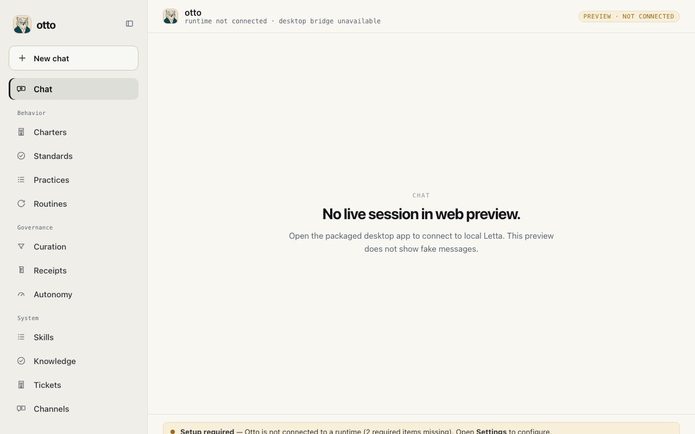

Standards & Practices
Canon and repeatable moves — what the office expects under pressure.
Local-first · v0.1
otto is the behavior layer over Letta — Standards, Curation, Practices, Routines, Channels, Autonomy, Knowledge, Runs, and Receipts turn memory into better future action.
Behavior loop
A lesson is not culture until it changes what happens next.
Surfaces
otto connects to a local Letta runtime. Provider keys stay in Letta — not in otto.
Canon and repeatable moves — what the office expects under pressure.
One gate for what enters the behavior system. Nothing compounds without ratification.
Scheduled behavior and proof artifacts — what the agent relied on before it acted.
Policy zones and model routing informed by files — not vibes.
Worker orchestration and external bridges — files as the coordination layer.
Talk to your agent when the runtime is connected. No mock transcripts.
Boundary
otto does not replace Letta memory. It records what your agent relied on, surfaces only consequential doors, and changes the next run when you ratify it.
Desktop
Labeled preview — not a live connected workspace.
